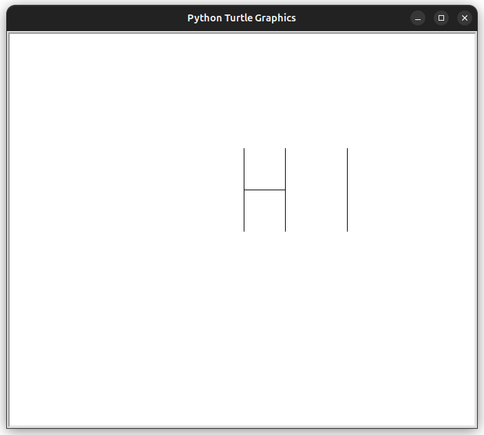

Turtle est un module graphique du langage de programmation Python. Il est inspiré de la programmation Logo et permet de déplacer une tortue sur l’écran.
donc vous pouvez l'utilisez pour construire des formes géométriques et d'appliquer un certain nombre de règles mathématiques et géométriques.
| Méthode | Description |
| forward(distance) | Avance d'une distance(en pixels) donnée. |
| backward(distance) | Recule d'une distance (en pixels) donnée. |
| goto(x,y) | Déplace le crayon jusqu'aux coordonnées (x,y). |
| left(angle) | Tourne à gauche d'un angle donnée (en gegrés) |
| right(angle) | Tourne à droite d'un angle donné (en degrés) |
| Méthode | Description |
| shape(forme) | forme possible:'classic' ou 'turtle' |
| speed(n) | Vitesse du tracé: de n=0 jusquà 10 (rapide) |
| width(n) | Epaisseur du trait: de n=0 jusquà n=10 (épais) |
| up() | Relève le crayon (pour le déplacer sans dessiner). |
| down() | Abaisse le crayon (pour recommencer le traçage). |
| home() | Ramène le crayon dans sa position initiale. |
| hideturtle() | Masque le crayon. |
Créer un carré de coté 100(une méthode rudimentaire):
from turtle import *
forward(100)
right(90)
forward(100)
right(90)
forward(100)
right(90)
forward(100)
right(90)
Créer un trainagle équilatéral d'un côté de 100
from turtle import *
forward(100)
right(120)
forward(100)
right(120)
forward(100)
right(120)
Ecrit le programme Turtle qui trace les figures suivantes:
1-Un rectangle de L=400 et l=200.
2- Un triangle isocèle d'angle= 30 (pour les distance chisissez ce que vous voulez).
3-
